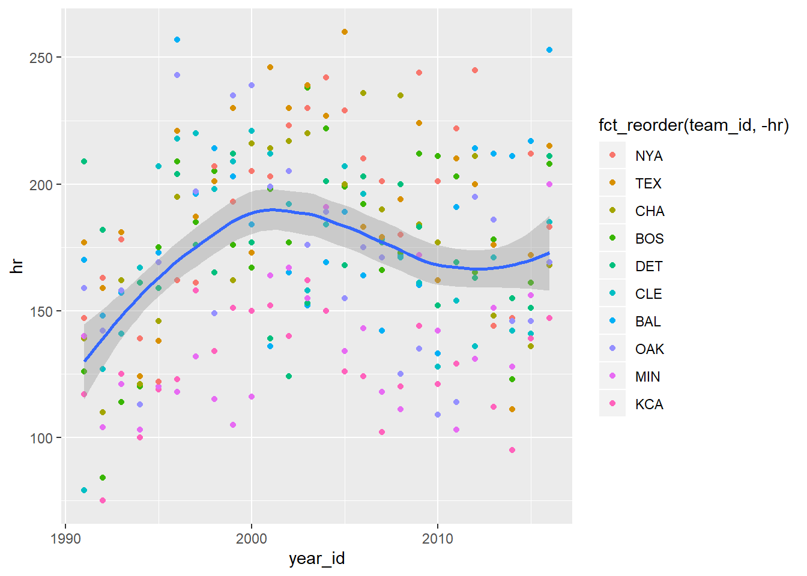
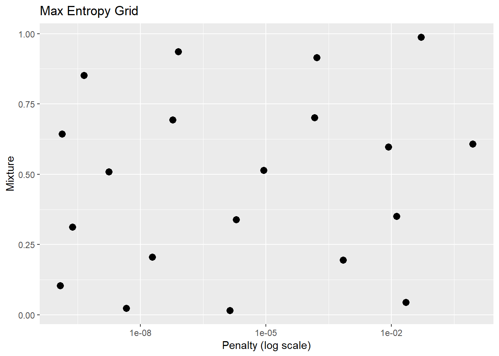
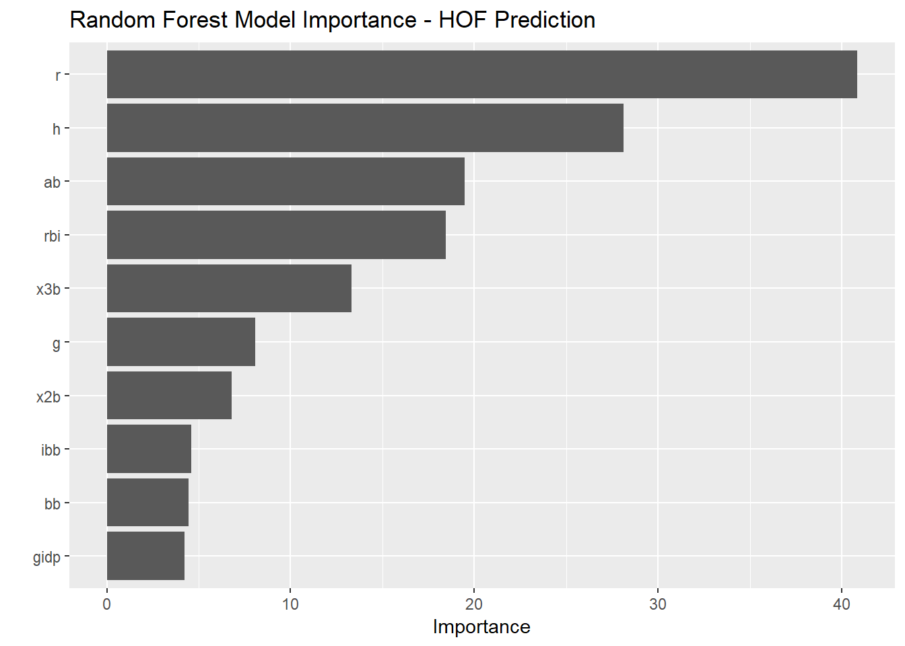

4 Data Modeling
4.1 Load Packages
4.2 Read Data
data = read_csv("Batting.csv", col_types = cols(SF = col_double(), GIDP = col_double())) %>%
clean_names()
hofdata = read_csv("HallOfFame.csv") %>%
clean_names() %>%
select(player_id, inducted) %>%
mutate(hof = ifelse(inducted=="Y",1,0)) %>%
filter(hof==1)## Parsed with column specification:
## cols(
## playerID = col_character(),
## yearid = col_double(),
## votedBy = col_character(),
## ballots = col_double(),
## needed = col_double(),
## votes = col_double(),
## inducted = col_character(),
## category = col_character(),
## needed_note = col_character()
## )## # A tibble: 1 x 2
## inducted n
## <chr> <int>
## 1 Y 317retiredyear =
data %>%
group_by(player_id) %>%
summarise(lastyear = max(year_id))
hof =
data %>%
group_by(player_id) %>%
summarise_at(vars(g:gidp), list(~sum(.,na.rm = TRUE))) %>%
ungroup() %>%
left_join(retiredyear) %>%
left_join(hofdata) %>%
mutate(inducted = if_else(inducted=="Y",1,0)) %>%
mutate(inducted = replace_na(inducted, 0)) %>%
filter(g>=1000) %>%
mutate(inducted = as.factor(inducted)) %>%
select(-hof)## Joining, by = "player_id"## Joining, by = "player_id"## # A tibble: 1,565 x 20
## player_id g ab r h x2b x3b hr rbi sb cs bb so
## <chr> <dbl> <dbl> <dbl> <dbl> <dbl> <dbl> <dbl> <dbl> <dbl> <dbl> <dbl> <dbl>
## 1 aaronha01 3298 12364 2174 3771 624 98 755 2297 240 73 1402 1383
## 2 abreubo01 2425 8480 1453 2470 574 59 288 1363 400 128 1476 1840
## 3 adairje01 1165 4019 378 1022 163 19 57 366 29 29 208 499
## 4 adamsbo03 1281 4019 591 1082 188 49 37 303 67 30 414 447
## 5 adamssp01 1424 5557 844 1588 249 48 9 394 154 50 453 223
## 6 adcocjo01 1959 6606 823 1832 295 35 336 1122 20 25 594 1059
## 7 ageeto01 1129 3912 558 999 170 27 130 433 167 81 342 918
## 8 ainsmed01 1078 3048 299 707 108 54 22 317 86 16 263 315
## 9 alfoned01 1506 5385 777 1532 282 18 146 744 53 17 596 617
## 10 alicelu01 1341 3971 551 1031 189 53 47 422 81 50 500 624
## # ... with 1,555 more rows, and 7 more variables: ibb <dbl>, hbp <dbl>, sh <dbl>,
## # sf <dbl>, gidp <dbl>, lastyear <dbl>, inducted <fct>## # A tibble: 2 x 2
## inducted n
## <fct> <int>
## 1 0 1229
## 2 1 168## # A tibble: 1,397 x 19
## player_id g ab r h x2b x3b hr rbi sb cs bb so
## <chr> <dbl> <dbl> <dbl> <dbl> <dbl> <dbl> <dbl> <dbl> <dbl> <dbl> <dbl> <dbl>
## 1 aaronha01 3298 12364 2174 3771 624 98 755 2297 240 73 1402 1383
## 2 adairje01 1165 4019 378 1022 163 19 57 366 29 29 208 499
## 3 adamsbo03 1281 4019 591 1082 188 49 37 303 67 30 414 447
## 4 adamssp01 1424 5557 844 1588 249 48 9 394 154 50 453 223
## 5 adcocjo01 1959 6606 823 1832 295 35 336 1122 20 25 594 1059
## 6 ageeto01 1129 3912 558 999 170 27 130 433 167 81 342 918
## 7 ainsmed01 1078 3048 299 707 108 54 22 317 86 16 263 315
## 8 alfoned01 1506 5385 777 1532 282 18 146 744 53 17 596 617
## 9 alicelu01 1341 3971 551 1031 189 53 47 422 81 50 500 624
## 10 allenbe01 1139 3404 357 815 140 21 73 351 13 16 370 424
## # ... with 1,387 more rows, and 6 more variables: ibb <dbl>, hbp <dbl>, sh <dbl>,
## # sf <dbl>, gidp <dbl>, inducted <fct>## # A tibble: 168 x 18
## player_id g ab r h x2b x3b hr rbi sb cs bb so
## <chr> <dbl> <dbl> <dbl> <dbl> <dbl> <dbl> <dbl> <dbl> <dbl> <dbl> <dbl> <dbl>
## 1 abreubo01 2425 8480 1453 2470 574 59 288 1363 400 128 1476 1840
## 2 andruel01 1221 4625 648 1266 207 37 35 436 241 83 408 684
## 3 aybarer01 1346 4842 606 1324 241 45 51 451 144 58 257 613
## 4 barmecl01 1186 3805 434 932 208 17 89 415 43 30 216 734
## 5 bautijo02 1519 5139 878 1311 267 17 308 862 60 26 881 1113
## 6 bayja01 1278 4505 737 1200 240 30 222 754 95 17 636 1216
## 7 beltrad01 2720 10295 1428 2942 591 36 445 1571 119 42 775 1584
## 8 beltrca01 2457 9301 1522 2617 536 78 421 1536 312 49 1051 1693
## 9 berkmla01 1879 6491 1146 1905 422 30 366 1234 86 48 1201 1300
## 10 betanyu01 1156 4052 437 1057 218 29 80 457 30 30 143 435
## # ... with 158 more rows, and 5 more variables: ibb <dbl>, hbp <dbl>, sh <dbl>,
## # sf <dbl>, gidp <dbl>4.3 Data Exploration
hofmod %>%
select(g:inducted) %>%
pivot_longer(cols = g:gidp) %>%
ggplot(aes(x=value,y=as.factor(inducted),color = name)) +
geom_point() +
theme(legend.position = "none") +
facet_wrap(~name, scales = "free")
4.4 Split Data test/train
set.seed(as.numeric(as.factor("beatnavy")))
hof_initial_split <- initial_split(hofmod, prop = 0.80)
hof_initial_split## <1118/279/1397>4.5 Preprocess Data
preprocessing_recipe <-
recipe(inducted ~ ., data = training(hof_initial_split)) %>%
step_knnimpute(all_numeric()) %>%
step_center(all_numeric()) %>%
step_scale(all_numeric()) %>%
step_rm(player_id) %>%
prep()
preprocessing_recipe## Data Recipe
##
## Inputs:
##
## role #variables
## outcome 1
## predictor 18
##
## Training data contained 1118 data points and no missing data.
##
## Operations:
##
## K-nearest neighbor imputation for player_id, ab, r, h, x2b, x3b, hr, rbi, sb, cs, ... [trained]
## Centering for g, ab, r, h, x2b, x3b, hr, rbi, sb, cs, bb, so, ... [trained]
## Scaling for g, ab, r, h, x2b, x3b, hr, rbi, sb, cs, bb, so, ... [trained]
## Variables removed player_id [trained]4.6 Apply Preprocessing
hof_training_preprocessed_tbl =
preprocessing_recipe %>%
bake(training(hof_initial_split))
hof_training_preprocessed_tbl## # A tibble: 1,118 x 18
## g ab r h x2b x3b hr rbi sb cs bb
## <dbl> <dbl> <dbl> <dbl> <dbl> <dbl> <dbl> <dbl> <dbl> <dbl> <dbl>
## 1 3.96 3.72 3.93 3.84 3.27 1.08e+0 5.51 4.55 0.786 0.783 2.89
## 2 -0.873 -0.702 -1.08 -0.770 -0.790 -8.61e-1 -0.556 -0.939 -0.701 -0.323 -1.11
## 3 -0.610 -0.702 -0.489 -0.669 -0.570 -1.22e-1 -0.730 -1.12 -0.433 -0.298 -0.421
## 4 -0.286 0.113 0.217 0.179 -0.0318 -1.47e-1 -0.974 -0.859 0.180 0.205 -0.290
## 5 0.925 0.670 0.158 0.589 0.374 -4.67e-1 1.87 1.21 -0.764 -0.423 0.182
## 6 -0.954 -0.759 -0.582 -0.809 -0.728 -6.64e-1 0.0781 -0.748 0.272 0.984 -0.662
## 7 -1.07 -1.22 -1.30 -1.30 -1.27 5.94e-4 -0.861 -1.08 -0.299 -0.649 -0.927
## 8 -0.101 0.0222 0.0300 0.0853 0.259 -8.85e-1 0.217 0.136 -0.532 -0.624 0.189
## 9 -0.474 -0.728 -0.601 -0.755 -0.561 -2.40e-2 -0.643 -0.780 -0.334 0.205 -0.133
## 10 -0.932 -1.03 -1.14 -1.12 -0.993 -8.12e-1 -0.417 -0.981 -0.813 -0.649 -0.568
## # ... with 1,108 more rows, and 7 more variables: so <dbl>, ibb <dbl>, hbp <dbl>,
## # sh <dbl>, sf <dbl>, gidp <dbl>, inducted <fct>4.7 Prepare Cross Validation
set.seed(as.numeric(as.factor("beatnavy")))
hof_cv_folds =
training(hof_initial_split) %>%
bake(preprocessing_recipe, new_data = .) %>%
vfold_cv(v = 5)
hof_cv_folds## # 5-fold cross-validation
## # A tibble: 5 x 2
## splits id
## <named list> <chr>
## 1 <split [894/224]> Fold1
## 2 <split [894/224]> Fold2
## 3 <split [894/224]> Fold3
## 4 <split [895/223]> Fold4
## 5 <split [895/223]> Fold54.8 Specify Models
GLM Model
glmnet_model =
logistic_reg(mode = "classification",
penalty = tune(),
mixture = tune()) %>%
set_engine("glmnet")
glmnet_model## Logistic Regression Model Specification (classification)
##
## Main Arguments:
## penalty = tune()
## mixture = tune()
##
## Computational engine: glmnetRandom Forest Model
forest_model =
rand_forest(
mode = "classification",
mtry = tune(),
trees = tune(),
min_n = tune()
) %>%
set_engine("randomForest", objective = "reg:squarederror")
forest_model## Random Forest Model Specification (classification)
##
## Main Arguments:
## mtry = tune()
## trees = tune()
## min_n = tune()
##
## Engine-Specific Arguments:
## objective = reg:squarederror
##
## Computational engine: randomForest4.9 Create Grid of Parameters to Validate Over
GLM Model
## Collection of 2 parameters for tuning
##
## id parameter type object class
## penalty penalty nparam[+]
## mixture mixture nparam[+]set.seed(as.numeric(as.factor("beatnavy")))
glmnet_grid <- grid_max_entropy(glmnet_params, size = 20)
glmnet_grid## # A tibble: 20 x 2
## penalty mixture
## <dbl> <dbl>
## 1 1.77e- 9 0.508
## 2 2.24e- 2 0.0442
## 3 4.54e-10 0.852
## 4 1.93e- 8 0.206
## 5 5.17e- 2 0.988
## 6 4.62e- 9 0.0242
## 7 1.94e- 6 0.338
## 8 8.83e- 1 0.608
## 9 8.52e- 3 0.597
## 10 1.23e-10 0.105
## 11 2.40e-10 0.313
## 12 5.91e- 8 0.694
## 13 8.03e- 8 0.936
## 14 1.32e- 2 0.350
## 15 8.91e- 6 0.515
## 16 1.66e- 4 0.915
## 17 1.44e- 4 0.702
## 18 1.38e- 6 0.0159
## 19 1.35e-10 0.643
## 20 7.04e- 4 0.196glmnet_grid %>%
ggplot(aes(penalty, mixture)) +
geom_point(size = 3) +
scale_x_log10() +
labs(title = "Max Entropy Grid", x = "Penalty (log scale)", y = "Mixture")
Random Forest Model
## Collection of 3 parameters for tuning
##
## id parameter type object class
## mtry mtry nparam[+]
## trees trees nparam[+]
## min_n min_n nparam[+]set.seed(as.numeric(as.factor("beatnavy")))
forest_grid <- grid_max_entropy(forest_params, size = 30)
forest_grid## # A tibble: 30 x 3
## mtry trees min_n
## <int> <int> <int>
## 1 2 1264 5
## 2 4 1113 28
## 3 5 622 11
## 4 2 28 6
## 5 3 24 19
## 6 3 1479 36
## 7 4 1404 13
## 8 5 33 40
## 9 6 115 15
## 10 6 686 3
## # ... with 20 more rows4.10 Execute Cross Validation
GLM Model
library(tune)
glmnet_stage_1_cv_results_tbl <- tune_grid(
formula = inducted ~ .,
model = glmnet_model,
resamples = hof_cv_folds,
grid = glmnet_grid,
metrics = metric_set(accuracy, kap, roc_auc),
control = control_grid(verbose = TRUE)
)
glmnet_stage_1_cv_results_tbl %>% show_best("accuracy", n = 10, maximize = FALSE)## # A tibble: 10 x 7
## penalty mixture .metric .estimator mean n std_err
## <dbl> <dbl> <chr> <chr> <dbl> <int> <dbl>
## 1 8.83e- 1 0.608 accuracy binary 0.886 5 0.00869
## 2 2.40e-10 0.313 accuracy binary 0.912 5 0.0103
## 3 1.93e- 8 0.206 accuracy binary 0.912 5 0.0103
## 4 1.94e- 6 0.338 accuracy binary 0.912 5 0.0103
## 5 1.44e- 4 0.702 accuracy binary 0.912 5 0.0103
## 6 1.66e- 4 0.915 accuracy binary 0.912 5 0.0103
## 7 7.04e- 4 0.196 accuracy binary 0.912 5 0.0118
## 8 1.35e-10 0.643 accuracy binary 0.913 5 0.00990
## 9 4.54e-10 0.852 accuracy binary 0.913 5 0.00990
## 10 1.77e- 9 0.508 accuracy binary 0.913 5 0.0107## # A tibble: 10 x 7
## penalty mixture .metric .estimator mean n std_err
## <dbl> <dbl> <chr> <chr> <dbl> <int> <dbl>
## 1 8.83e- 1 0.608 kap binary 0 5 0
## 2 5.17e- 2 0.988 kap binary 0.374 5 0.0553
## 3 1.32e- 2 0.350 kap binary 0.492 5 0.0589
## 4 7.04e- 4 0.196 kap binary 0.496 5 0.0533
## 5 2.24e- 2 0.0442 kap binary 0.498 5 0.0637
## 6 4.62e- 9 0.0242 kap binary 0.499 5 0.0551
## 7 2.40e-10 0.313 kap binary 0.500 5 0.0432
## 8 1.93e- 8 0.206 kap binary 0.500 5 0.0432
## 9 1.94e- 6 0.338 kap binary 0.500 5 0.0432
## 10 1.44e- 4 0.702 kap binary 0.500 5 0.0432## # A tibble: 10 x 7
## penalty mixture .metric .estimator mean n std_err
## <dbl> <dbl> <chr> <chr> <dbl> <int> <dbl>
## 1 8.83e- 1 0.608 roc_auc binary 0.5 5 0
## 2 5.17e- 2 0.988 roc_auc binary 0.901 5 0.0192
## 3 2.24e- 2 0.0442 roc_auc binary 0.919 5 0.0127
## 4 8.03e- 8 0.936 roc_auc binary 0.919 5 0.0120
## 5 4.54e-10 0.852 roc_auc binary 0.919 5 0.0121
## 6 5.91e- 8 0.694 roc_auc binary 0.919 5 0.0121
## 7 1.94e- 6 0.338 roc_auc binary 0.919 5 0.0121
## 8 1.35e-10 0.643 roc_auc binary 0.919 5 0.0121
## 9 1.77e- 9 0.508 roc_auc binary 0.919 5 0.0119
## 10 8.91e- 6 0.515 roc_auc binary 0.919 5 0.0119Random Forest Model
forest_stage_1_cv_results_tbl <- tune_grid(
formula = inducted ~ .,
model = forest_model,
resamples = hof_cv_folds,
grid = forest_grid,
metrics = metric_set(accuracy, kap, roc_auc),
control = control_grid(verbose = TRUE)
)
forest_stage_1_cv_results_tbl %>% show_best("accuracy", n = 10, maximize = FALSE)## # A tibble: 10 x 8
## mtry trees min_n .metric .estimator mean n std_err
## <int> <int> <int> <chr> <chr> <dbl> <int> <dbl>
## 1 3 24 19 accuracy binary 0.913 5 0.0122
## 2 2 69 32 accuracy binary 0.914 5 0.0121
## 3 4 1128 2 accuracy binary 0.916 5 0.00835
## 4 5 1992 5 accuracy binary 0.916 5 0.00798
## 5 3 691 22 accuracy binary 0.916 5 0.00925
## 6 4 1404 13 accuracy binary 0.916 5 0.00947
## 7 6 575 23 accuracy binary 0.916 5 0.00936
## 8 2 1264 5 accuracy binary 0.917 5 0.00979
## 9 2 1986 16 accuracy binary 0.917 5 0.00948
## 10 2 824 38 accuracy binary 0.918 5 0.00960## # A tibble: 10 x 8
## mtry trees min_n .metric .estimator mean n std_err
## <int> <int> <int> <chr> <chr> <dbl> <int> <dbl>
## 1 3 24 19 kap binary 0.478 5 0.0783
## 2 6 575 23 kap binary 0.498 5 0.0660
## 3 2 1264 5 kap binary 0.500 5 0.0639
## 4 4 1404 13 kap binary 0.501 5 0.0608
## 5 2 69 32 kap binary 0.501 5 0.0756
## 6 2 1986 16 kap binary 0.504 5 0.0632
## 7 3 691 22 kap binary 0.508 5 0.0645
## 8 4 1128 2 kap binary 0.509 5 0.0539
## 9 5 1992 5 kap binary 0.509 5 0.0496
## 10 2 605 13 kap binary 0.514 5 0.0606## # A tibble: 10 x 8
## mtry trees min_n .metric .estimator mean n std_err
## <int> <int> <int> <chr> <chr> <dbl> <int> <dbl>
## 1 5 33 40 roc_auc binary 0.890 5 0.0236
## 2 3 24 19 roc_auc binary 0.899 5 0.0190
## 3 6 115 15 roc_auc binary 0.910 5 0.0192
## 4 2 28 6 roc_auc binary 0.913 5 0.0171
## 5 6 575 23 roc_auc binary 0.913 5 0.0195
## 6 6 663 38 roc_auc binary 0.916 5 0.0187
## 7 3 379 31 roc_auc binary 0.916 5 0.0159
## 8 2 69 32 roc_auc binary 0.917 5 0.0178
## 9 5 291 22 roc_auc binary 0.917 5 0.0177
## 10 2 824 38 roc_auc binary 0.917 5 0.01644.11 Select Best Parameters
params_glmnet_best <- glmnet_stage_1_cv_results_tbl %>%
select_best("roc_auc", maximize = FALSE)
params_glmnet_best## # A tibble: 1 x 2
## penalty mixture
## <dbl> <dbl>
## 1 0.883 0.608params_forest_best <- forest_stage_1_cv_results_tbl %>%
select_best("roc_auc", maximize = FALSE)
params_forest_best## # A tibble: 1 x 3
## mtry trees min_n
## <int> <int> <int>
## 1 5 33 404.12 Save Best Paramenters
glmnet_stage_2_model <- glmnet_model %>%
finalize_model(parameters = params_glmnet_best)
glmnet_stage_2_model## Logistic Regression Model Specification (classification)
##
## Main Arguments:
## penalty = 0.883211000083764
## mixture = 0.608328476548195
##
## Computational engine: glmnet## Random Forest Model Specification (classification)
##
## Main Arguments:
## mtry = 5
## trees = 33
## min_n = 40
##
## Engine-Specific Arguments:
## objective = reg:squarederror
##
## Computational engine: randomForest4.13 Compare Models
train_processed <-
training(hof_initial_split) %>%
bake(preprocessing_recipe, new_data = .)
test_processed <-
testing(hof_initial_split) %>%
bake(preprocessing_recipe, new_data = .)
target_expr <- preprocessing_recipe %>%
pluck("last_term_info") %>%
filter(role == "outcome") %>%
pull(variable) %>%
sym()
glmnet_stage_2_metrics =
glmnet_stage_2_model %>%
fit(formula = inducted ~ ., data = train_processed) %>%
predict(new_data = test_processed) %>%
bind_cols(testing(hof_initial_split)) %>%
metrics(!! target_expr, .pred_class)
forest_stage_2_metrics =
forest_stage_2_model %>%
fit(formula = inducted ~ ., data = train_processed) %>%
predict(new_data = test_processed) %>%
bind_cols(testing(hof_initial_split)) %>%
metrics(!! target_expr, .pred_class)
glmnet_stage_2_metrics %>%
mutate(mod = "glmnet") %>%
bind_rows(
forest_stage_2_metrics %>%
mutate(mod = "forest")
) %>%
arrange(.metric,-.estimate)## # A tibble: 4 x 4
## .metric .estimator .estimate mod
## <chr> <chr> <dbl> <chr>
## 1 accuracy binary 0.900 forest
## 2 accuracy binary 0.857 glmnet
## 3 kap binary 0.497 forest
## 4 kap binary 0 glmnetLooks like the Random Forest is the better model.
4.14 Run Best Model on All Data
4.15 Run Model on New Data
hoftest %>%
bake(preprocessing_recipe, new_data = .) %>%
predict(model_final, new_data = .) %>%
bind_cols(hoftest %>% select(player_id)) %>%
arrange(desc(.pred_class))## # A tibble: 168 x 2
## .pred_class player_id
## <fct> <chr>
## 1 1 beltrad01
## 2 1 beltrca01
## 3 1 cabremi01
## 4 1 heltoto01
## 5 1 jeterde01
## 6 1 konerpa01
## 7 1 ortizda01
## 8 1 pujolal01
## 9 1 rodrial01
## 10 1 rolliji01
## # ... with 158 more rows4.16 Variable Importance
